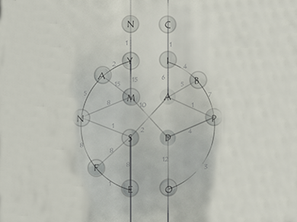
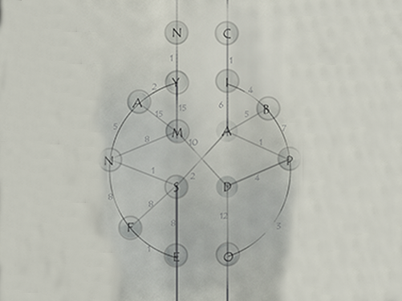
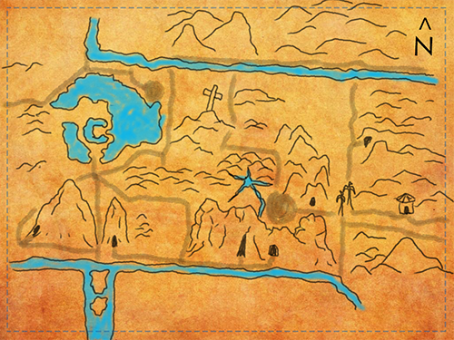
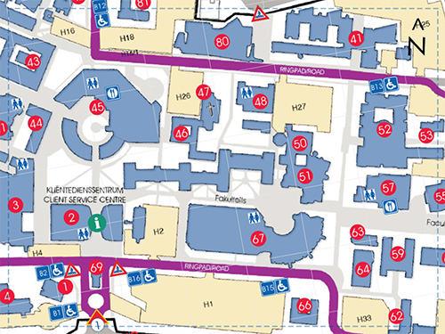
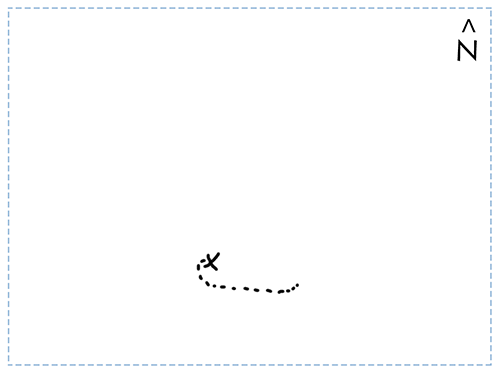

Puzzle 1
Use shortest path algorithm
Use shortest path algorithm
Cartoon map of campus
Decrypt audio file
Map of campus
Watch video
X Mark
Rowan visited the URL and discovered Okonko. The website had an eerie, African vibe and seemed to belong to some kind of secret society looking for intellectuals to join them. They asked the participants of their “trials” to accept their manifesto or else they face banishment from the trials.